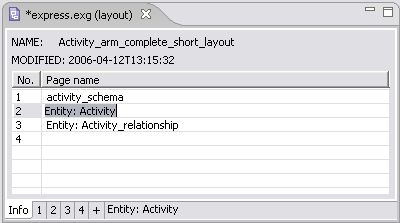

Rename Page
You can change a particular page name by using:
Info panel
Page properties window
Info panel
Open
Info
panel in the
Editor
panel. The table list with available pages appears (see
Figure 1
)
Click twice (not double click) on a line with a page you want to rename and specify the name here.

Figure 1.
Info panel, selected page name to be renamed
To top
Page Properties window
You can either:
Double click on the 'white' area of the diagram in the
Editor
panel.
Or
Right click on the 'white' area of the diagram in the
Editor
panel. A
context sensitive menu
appears.
Select the
Properties
menu item.
The properties dialog window appears (see
Figure 2
).
Enter an applicable name of the page into the
Name
field.
Click
OK
button to save changes or
Cancel
button to reject changes and close the window.
Figure 2
. Page properties dialog window
To top
Copyright © 2005-2008
LKSoftWare GmbH
. All Rights Reserved.
JSDAI is a registered trade mark of LKSoftWare GmbH.